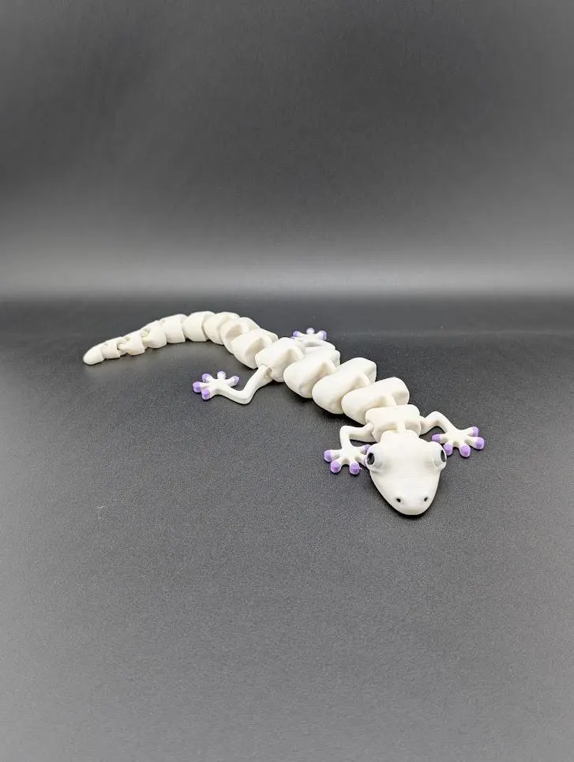

Articulated Gecko Fidget Toy
$8.99
Meet your new favorite desk buddy! This adorable and wiggly articulated gecko is ready to slide into your collection. With a fully flexible body, this gecko has a smooth and satisfying movement that makes it an irresistible fidget toy. At an impressive 11 inches long, it's the perfect size to handle and pose.
Make It Uniquely Yours! Create the gecko of your dreams by choosing your own colors. Select your desired Body Color and Toe/Eye Color from the dropdown menus.
Dimensions: 11 inches long, 4 inches wide (from toe to toe).
Please Note: Not recommended for very young children due to articulated parts.